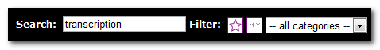
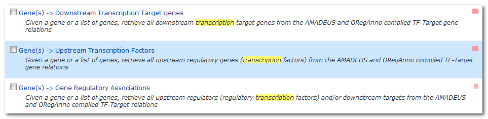
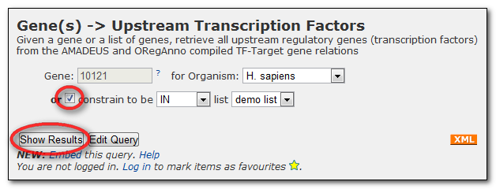
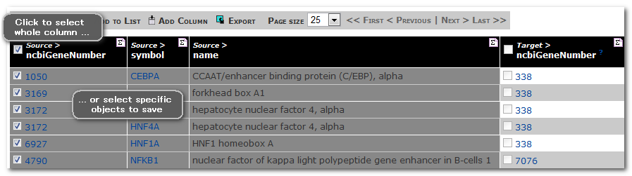
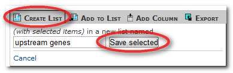

You can use lists in any template query, or in queries you create yourself in the QueryBuilder. Suppose that we want to find the upstream transcription factors which regulate the genes in our list, we can run a template to find them.
Search the template queries for 'transcription':
and select the template
'Gens(s) --> Upstream Transcription Factors':
Now that we have created a list the template query gives us the option to use it instead of entering an identifier.
Click the checkbox to select the demo list you named earlier, and then run the query.
The results table shows the transcription factors that target the genes from our original list.
You can also create new lists from results tables. We can save a list of the transcription factors from this query to view in the list analysis page or to use in more templates.
Click on the checkbox by 'Source > ncbiGeneNumber' and choose a name for the saved list.


Using lists is an excellent way to retrieve information about a whole list of data. For example we could also retrieve:
- interactions for these genes
- DO annotation for these genes